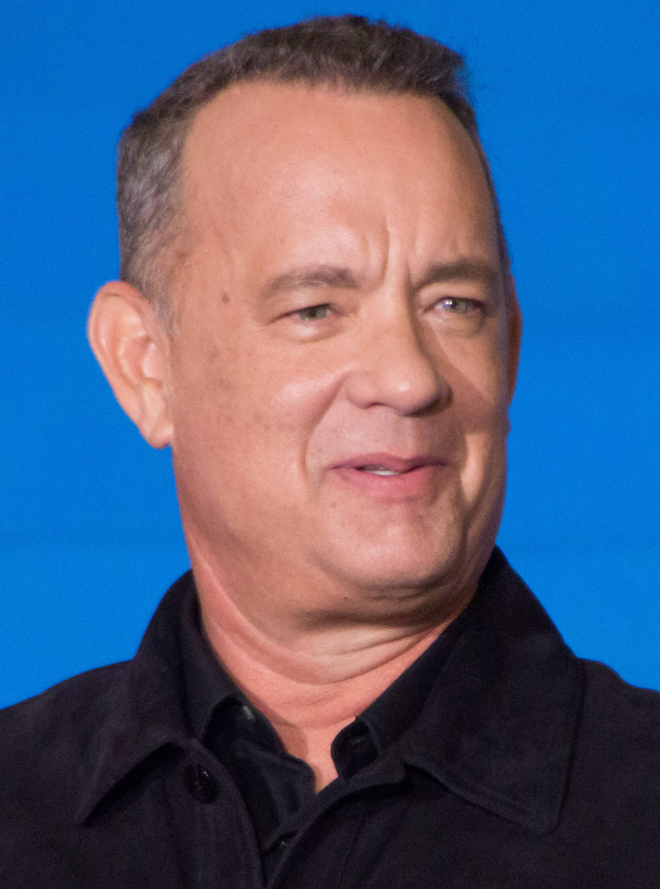
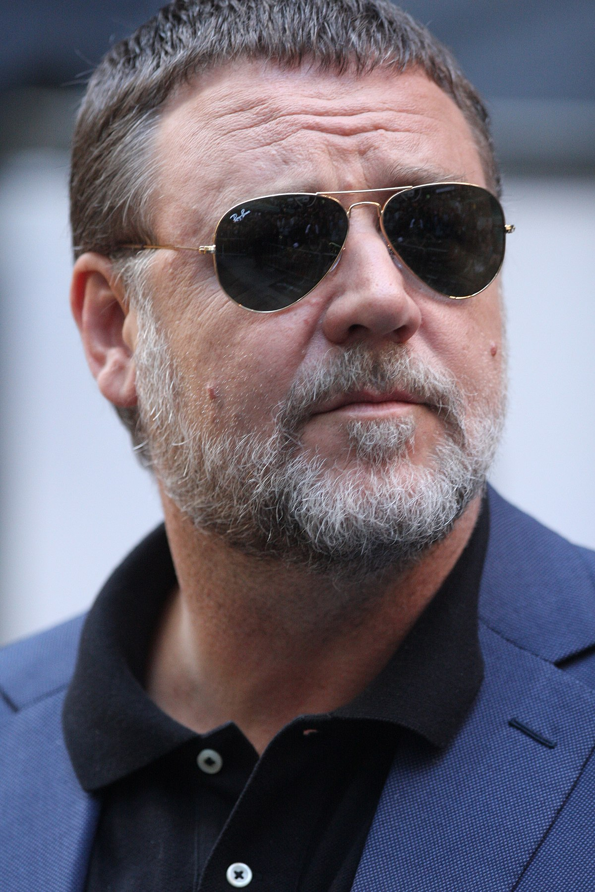
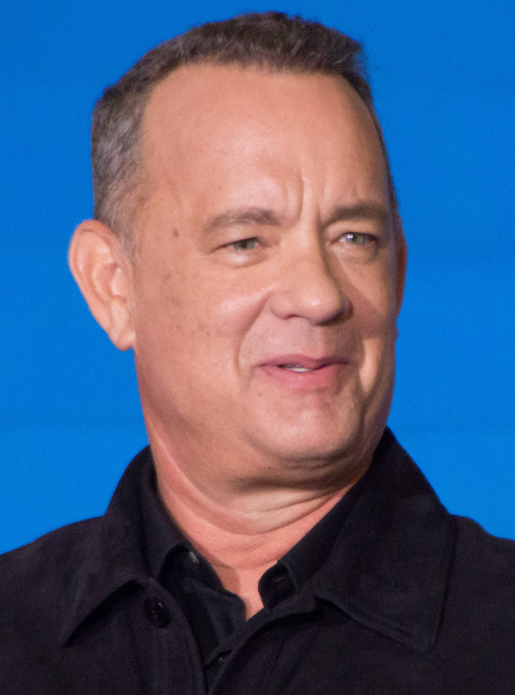
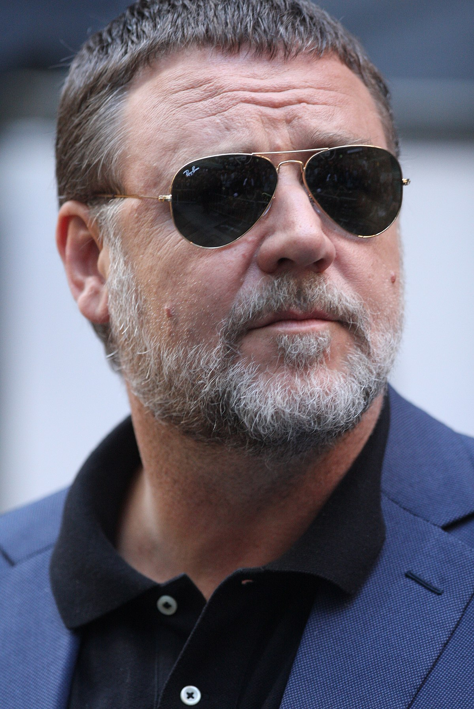

Nagradzani Aktorzy
Na przestrzeni lat wielu aktorów zdobyło Oscara. Oto niektórzy z nich:
|  | Tom Hanks za rolę w Forrest Gump (1994). |
|  | Russell Crowe za rolę w Gladiator (2000). |
Na przestrzeni lat wielu aktorów zdobyło Oscara. Oto niektórzy z nich:
|  | Tom Hanks za rolę w Forrest Gump (1994). |
|  | Russell Crowe za rolę w Gladiator (2000). |